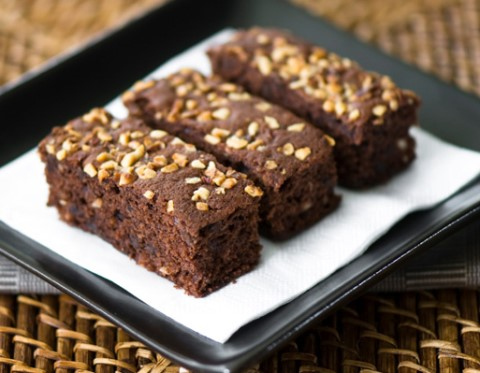

Brownies

Description
The Odin Project's star dessert, it is a small chocolate sponge cake, typical of U.S. cuisine. It is so called because of its dark brown color.
It is sometimes covered with thick chocolate syrup and may have pieces of nuts, chocolate butterscotch or peanut butter inside.
Ingredients
- 4 eggs.
- 250 grams of sugar.
- 1/2 teaspoon vanilla extract.
- A pinch of salt.
- 200 grams of fondant chocolate.
- 150 grams of butter (shortening).
- 125 grams of flour.
- 150 grams of chopped walnuts.
For the finishing:
- 100 grams of fondant chocolate.
- 200 grams of whole nuts.
Steps
- Beat the eggs together with the sugar, vanilla and salt in a bowl.
- Then, in a small saucepan, melt the chocolate with the butter, let it cool and add it to the beaten eggs. Add the flour, beat, add the chopped walnuts and mix well.
- Then pour into a greased and floured rectangular baking pan and bake in a preheated oven at 180 °C for 25 minutes. Remove from the oven, unmold and form the brownies, cutting the sponge cake into squares of about 4 or 5 centimeters.
- Finally, melt the chocolate with a few drops of water. Brush the surface of the brownies with the chocolate and place a walnut in the center of each one.
Back